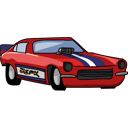

<!DOCTYPE html>
<html lang="en">
<head>
  <meta charset="UTF-8">
  <meta http-equiv="X-UA-Compatible" content="IE=edge">
  <meta name="viewport" content="width=device-width, initial-scale=1.0">
  <title>面向对象编程</title>
</head>
<body>

  <script src="https://code.jquery.com/jquery-2.1.0.js"></script>

  <script>
    // 给对象添加方法
    /* var dog = {
      name: "Pancake",
      legs: 4,
      isAwesome: true
    };

    dog.bark = function() {
      console.log("Woof woof! My name is " + this.name + "!");
    }

    dog.bark(); */

    // 在多个对象之间共享方法
    /* var speak = function() {
      console.log(this.sound + "! My name is " + this.name + "!");
    }
    var cat = {
      sound: "Miaow",
      name: "Mittens",
      speak: speak
    }

    cat.speak();

    var pig = {
      sound: "Oink",
      name: "Charlie",
      speak: speak
    }

    var horse = {
      sound: "Neigh",
      name: "Marie",
      speak: speak
    }

    pig.speak(); // Oink! My name is Charlie!

    horse.speak(); // Neigh! My name is Marie! */

    /* 
      要在多个对象之间共享方法，可以直接将方法添加到每一个对象中，就像我们对 speak 所做的那样。
      但是，如果有很多方法或对象，单独给每个对象添加相同的方法可能会变得很烦人，并且这可能会使得
      你的代码变得一团糟。想象一下，如果你需要整个动物园有 100 只动物，并且想要每个动物都共享一组
      10 个方法和属性，这将是多大的工作量。

      JavaScript 对象构造方法提供了一种更好的方法，可以在对象之间共享方法和属性
    */

    // 绘制汽车
    /* var Car = function(x, y) {
      this.x = x;
      this.y = y;
    }

    var drawCar = function(car) {
      var carHtml = "";

      var carElement = $(carHtml);

      carElement.css({
        position: "absolute",
        left: car.x,
        top: car.y
      })

      $("body").append(carElement);
    }

    var tesla = new Car(20, 20);
    var nissan = new Car(100, 200);

    drawCar(tesla);
    drawCar(nissan); */


    // 用原型定制对象
    var Car = function(x, y) {
      this.x = x;
      this.y = y;
    }

    Car.prototype.draw = function() {
      var carHtml = "";

      this.carElement = $(carHtml);

      this.carElement.css({
        position: "absolute",
        left: this.x,
        top: this.y
      })

      $("body").append(this.carElement);
    }

    // 添加一个 moveRight 方法
    Car.prototype.moveRight = function() {
      this.x += 5;

      this.carElement.css({
        position: "absolute",
        left: this.x,
        top: this.y
      })
    }
    // 添加一个 moveLeft 方法
    Car.prototype.moveLeft = function() {
      this.x -= 5;

      this.carElement.css({
        position: "absolute",
        left: this.x,
        top: this.y
      })
    }

    // 添加一个 moveUp 方法
    Car.prototype.moveUp = function() {
      this.y -= 5;

      this.carElement.css({
        position: "absolute",
        left: this.x,
        top: this.y
      })
    }

    // 添加一个 moveDown 方法
    Car.prototype.moveDown = function() {
      this.y += 5;

      this.carElement.css({
        position: "absolute",
        left: this.x,
        top: this.y
      })
    }


    var tesla = new Car(20, 20);
    var nissan = new Car(100, 200);

    tesla.draw();
    nissan.draw();

    // 测试
    // tesla.moveRight();
    // tesla.moveLeft();
    // tesla.moveUp();
    // tesla.moveDown();
  </script>
</body>
</html>